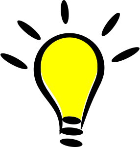

Welcome to the RaspberrySTEM Projects Guide!
The goal of this Projects Guide is to provide a step-by-step roadmap for learning the key principles of programming and electronics using the RaspberrySTEM CREATOR Kit. Here are some notes and thoughts on how to make the best use this guide and the RaspberrySTEM CREATOR Kit.
We've made every attempt to make this Projects Guide completely self-contained, self-explanatory and FUN! Learning programming and electronics can be a difficult (and sometimes frustrating) process. Our goal is to make the process as simple as possible. That said, both programming and electronics are subjects where the basics can be learned very quickly, but at the same time, you can spend a lifetime mastering them. Everyone learns differently and at different rates -- some people will be able to move quickly through each project in this guide, and some will want to spread out the learning process over weeks or months -- and it's important that you work at your own pace and do what's comfortable for you.
While you’re welcome to skip around this guide as you please, if you have no previous experience with programming or electronics, we recommend that you read and follow the projects in this guide in the order in which they’re presented. The guide is designed to build on itself, and skipping sections may make it difficult to fully understand later concepts and projects in the guide. The small projects early in the guide eventually build into larger -- and MORE FUN -- projects later in the guide.
Within the projects, we include informational sections. These are sections of additional information that explain particular concepts. These sections will be notes with a lightbulb (  ).
Because a large portion of this guide will be used to teach programming, we wanted to provide some conventions on how we would demonstrate the code you would be writing. Because code can be very finicky -- you have to space things the right way, capitalize words correctly, etc. -- it's important for you to know exactly what the code should look like. For that reason, we have put all the code snippets (a cute term for several lines of code) in their own special boxes. They will look like this:
In
some code boxes, you'll see line numbers included to the left of the
code.
When we put line numbers along with the code, this
is
simply for you to use as a reference to ensure that you can more easily
type in your code correctly. It's also a good way for us to
discuss the code -- we just need to mention the line number(s) and
you'll know which particular snippet of code we're talking about. Here's an example
of
what a code box with line numbers might look like:
There will be many instances where we will provide a snippet of code in a project. You can either retype or cut-and-paste the code into the program window.
With some programs you write, there will be
"output" from your code. Output is just a fancy word for
information that your code spits back out at you, either because you
told it to or because there was a problem with your code that the
computer wanted to let you know about. There is a place in
our
development window where output will be displayed, and in some
projects, we'll want to let you know upfront what output you should
expect. When we want to show you what output to expect, we'll
provide an output box that might look a little something like this:
This is where we will display the output...
Just like with the programming side of things, for the electronics, we'll be providing a couple different ways to demonstrate exactly how you build the projects on your RaspberrySTEM CREATOR Kit. We'll introduce these conventions in the first few projects.
Now it's
time to jump into the hands-on stuff! The next topic we'll
discuss is how to use this development environment, and after
that, we'll jump right into the projects...